Prospector Lite reads the screen rather than game memory, so it has to learn where the game's UI sits on your setup. This page walks the calibration steps in the app's order, from the capacity bar through Advanced Cue Matching to the optional OCR regions, using the same sanitized screenshots that ship inside the app. It ends with the built-in test tools and a troubleshooting FAQ.
Before you calibrate
Calibration tells the macro where to look on your screen: the capacity bar, the three white prompt words, and any optional regions you enable. Do it once; you only redo a spot when your screen changes. If a spot is wrong, everything downstream misreads, which is why the setup wizard puts calibration right after permissions.
One save filethe wizard and the Calibrate tab write the same values
Frozen capturesthe picker shows a screenshot, never live video
Confirm to savenothing writes until you confirm; Esc cancels
Validated writesa failed check keeps your previous values
There is one calibration store. The setup wizard's Guided Calibration page and the Calibrate tab drive the same engine and the same save file; the wizard itself says "there is exactly one set of values". The wizard walks the numbered steps in order with prep instructions and example screenshots; the Calibrate tab is the maintenance surface you come back to later, with the same captures plus live tests, manual per-pixel rows, and the Advanced cue matching section at the bottom. Each calibration card also has a "View code" button that opens the code responsible for that step, pinned to the commit your build was made from.
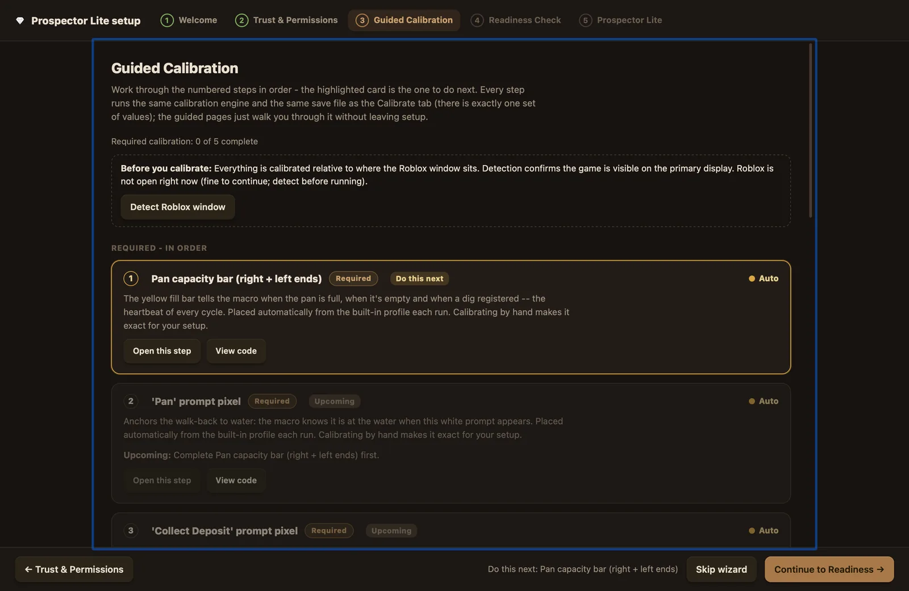
The wizard's Guided Calibration checklist. Required steps run in order; the highlighted card is the one to do next.
The Roblox window comes first
Everything is stored relative to the Roblox window rectangle captured at calibration time. That is what lets the app place points automatically and detect when a calibration has gone stale. Before the numbered steps, the checklist shows a banner reading "Before you calibrate:" with a "Detect Roblox window" button; a successful detect prints the size and position it found, for example "✓ Found: 1800×1087 at (0, 39)". Open Roblox in Prospecting on your primary display before calibrating; on a multi-monitor setup, calibration always uses the primary monitor.
Keep the window where it is once you start calibrating. The app compares the stored window size to the live one within 4 px, rechecking about every 8 seconds; on a mismatch, required items flip to Stale, a red banner reads "Re-calibration needed.", and Start stays disabled until you recalibrate or restore the window. A pure move (no resize) recovers on its own once the window is back.
Status chips and the start gate
Each item on the checklist carries a status chip:
Chip
Meaning
Calibrated
You calibrated the item by hand and the Roblox window still matches the window it was calibrated against.
Auto
Auto-calibration is on and the item is placed from the built-in ratio profile at every run start. The macro is runnable out of the box this way; calibrating by hand makes the spot exact for your setup.
Stale
Calibrated, but the Roblox window has moved or resized since. Recalibrate, or restore the window.
Not set
A required value is missing with auto-calibration off, or an enabled optional feature is missing its calibration.
Needs review
Stored values look suspicious (for example a capacity pair with swapped tips), or they predate a requirement change. The app never modifies stored values on its own; the chip asks you to look.
Off
An optional item whose feature is disabled. Nothing to do unless you turn the feature on.
A classic run can only start when all required items read Auto or Calibrated. One item can never be satisfied automatically: Advanced Cue Matching requires a real capture on this machine, because a letter-shape mask cannot come from a profile. If a required item needs attention when you press Start, the app refuses, explains which item is blocking, and opens the Calibrate tab. Studio scripts are the exception; a block script that uses no pixel detection can run without calibration.
One more behavior worth knowing: a manual save of any core point turns auto-calibration off for good and makes your screen authoritative. From then on the saved coordinates (and the ratios re-derived from your window) are what the engine uses.
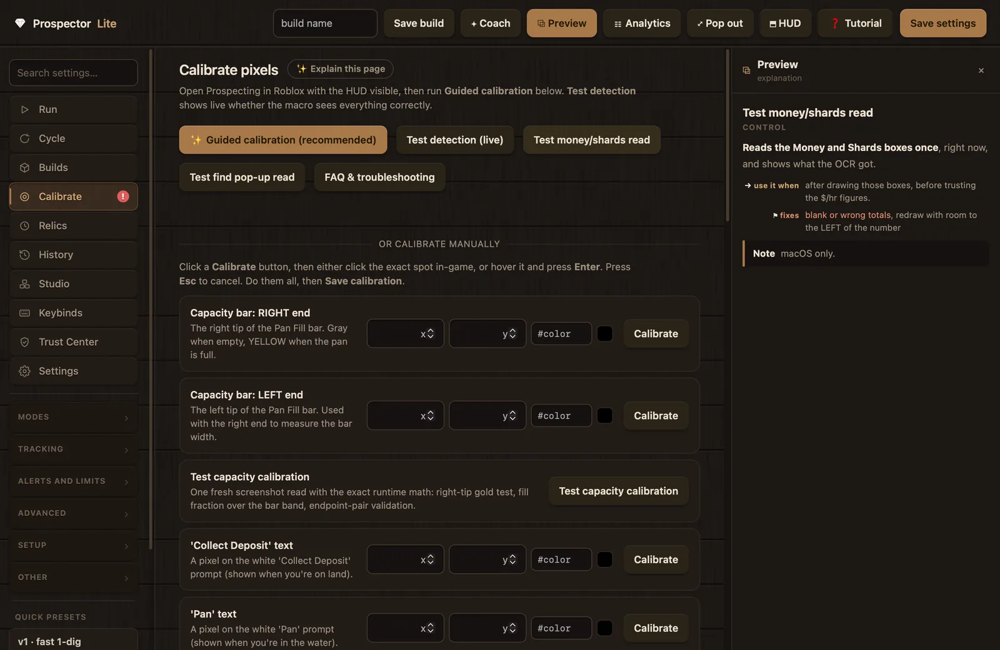
The Calibrate tab. The same captures as the wizard, plus manual rows, tests, and the Advanced cue matching section.
Steps 1 to 4: the pixel spots
The first four required steps each capture a single point. For each capture, the app first checks Roblox is visible, then opens a full-screen picker over a frozen screenshot of your game. In pixel mode a round loupe magnifies the area under your cursor at 9x; clicking shows a marker and a card with the captured color and position, and Confirm saves it. Where the app can auto-detect the spot, the picker opens with a red ✕ already placed on its proposal; you confirm it, or click the correct spot yourself. Esc cancels at any point with your previous values intact.
01
Pan capacity bar (right and left ends)
Required
The yellow Pan Fill bar tells the macro when the pan is full, when it is empty, and when a dig registered. It is the heartbeat of the whole cycle, which is why it comes first. This step captures both tips of the bar in two captures.
In Roblox, dig until the capacity bar is completely full, all yellow. Leave it full and come back to the app.
Start the capture. The app looks for the widest run of solid gold in the lower part of the screen and opens the picker with a red ✕ on its proposal for the right tip.
Check the ✕ sits on the right tip, then Confirm; or click the correct spot yourself.
Repeat for the left tip. Keep the bar full; nothing else changes in the game.
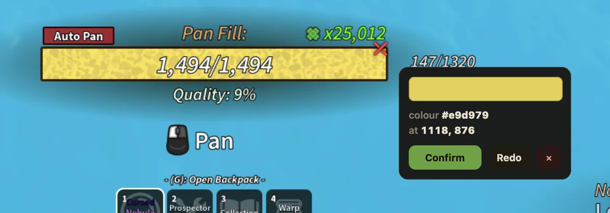
The picker's confirm card on the detected right tip of the full bar.
The pair is validated before it saves: the right tip must sit more than 20 px to the right of the left tip, the two tips must sit within 8 px of the same row, and the measured width must come out at least 24 px. A failed check writes nothing; the app reports "Calibration NOT saved. Previous values kept." with the reasons spelled out.
Common mistake: calibrating with a half-full bar, or clicking the very edge pixel, which is a pale anti-aliased blend rather than solid gold. The picker guards against this: a manual click is walked up to 10 px inward to the first solid-gold pixel, and a click with no gold in reach is rejected with the color it actually read. The auto-proposal lands 6 px inside the solid fill for the same reason.
Related:Test capacity calibration re-reads the screen with the runtime math after you save. Watch for: the macro walking forward and never digging usually means this pair is off.
02
"Pan" prompt pixel
Required
Anchors the walk back to water: the macro knows it has reached the river when the white "Pan" prompt appears at the bottom of the screen.
Stand in the water so the white "Pan" prompt shows at the bottom of the screen, then come back to the app.
Start the capture. The picker opens over a frozen screenshot, with a proposal on the text when the app finds it.
Click the middle of the white Pan letters, check the card's color and position, then Confirm.
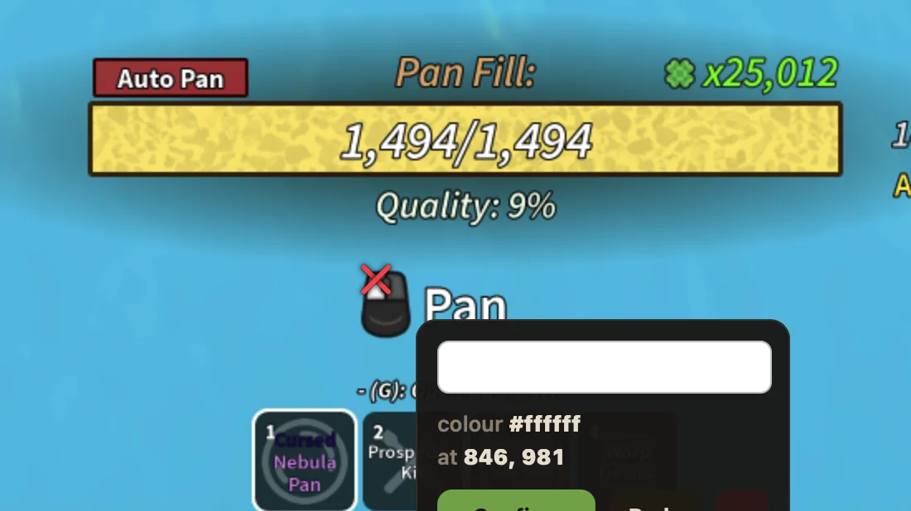
The white "Pan" prompt with the confirm card on the captured pixel.
Click the letters, not the mouse icon beside them. At runtime the fallback detector samples a small box around this spot and needs at least 12% of it to read white, so the middle of the word is the safest target.
03
"Collect Deposit" prompt pixel
Required
Tells the macro it has reached a deposit on land and can collect.
Step onto land at a deposit so the white "Collect Deposit" prompt shows, then come back.
Start the capture and click the middle of the white Collect Deposit text.
Confirm the card.
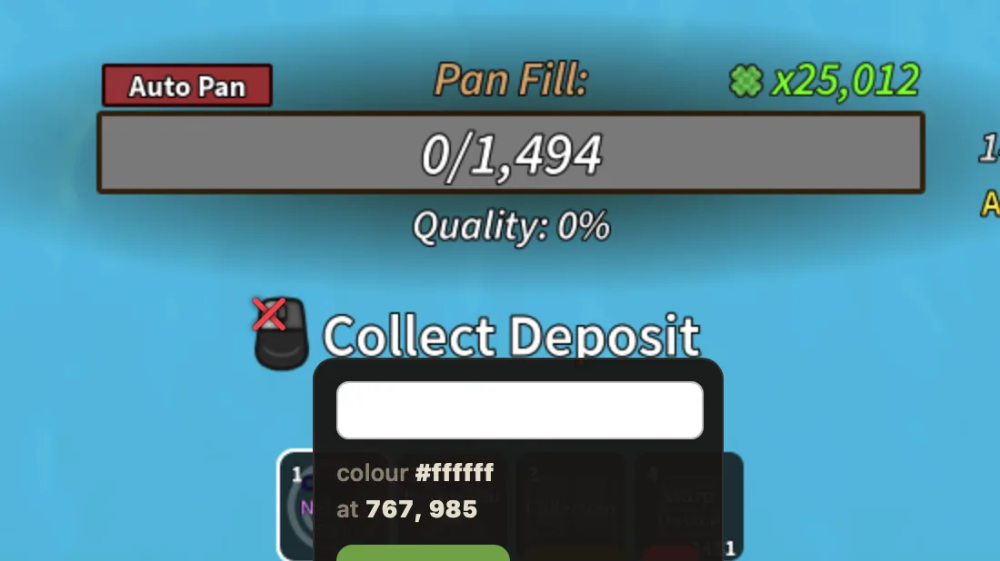
"Collect Deposit" visible on land, capacity bar empty and ready to dig.
Make sure only the prompt the app asks for is visible when you capture. The wide "Collect Deposit" text also serves as a guard at runtime, so the detector can tell it apart from "Pan" and "Shake".
04
"Shake" prompt pixel
Required
Detects the shake phase, when the pan is being emptied into finds.
Fill the pan, walk to the water, and begin a shake so the white "Shake" prompt shows.
Come back quickly and start the capture. The capture snapshots the game the moment you press Start, so the prompt must still be on screen.
Click the middle of the white Shake text and Confirm.
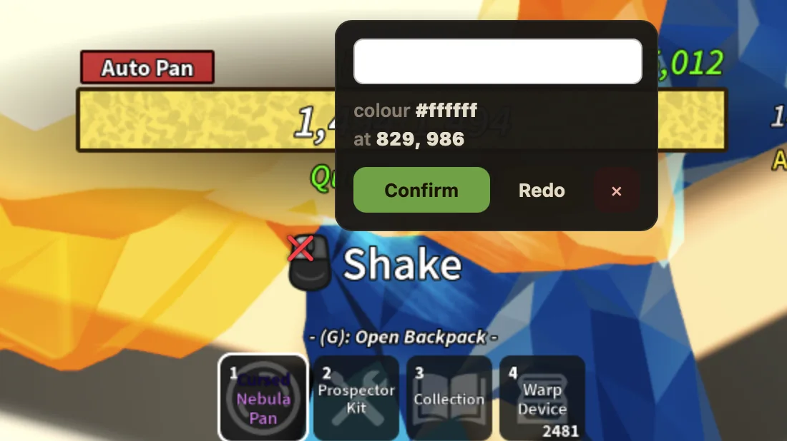
Mid-shake, with the confirm card on the captured pixel.
Step 5: Advanced Cue Matching
Advanced Cue Matching is the primary prompt detector, and the fifth required step. Instead of checking a small white box, it captures the actual letter shapes of the "Pan", "Collect Deposit", and "Shake" prompts and matches those shapes at runtime. A player standing in white cannot reproduce the precise letter shape, and the mask tolerates minor visual variation better than a single pixel. The section lives at the bottom of the Calibrate tab under the heading "Advanced cue matching" with a badge reading "required"; all three captures are required for readiness, and the single-pixel checks from steps 2 to 4 remain only as a fallback while a mask is missing or disabled.
Three captures, one per prompt
Each mask is captured while its prompt is actually on screen, so you go back into the game between captures to stage the next one. The flow never chains captures automatically: after each confirmed capture you land on a stage card reading "Capture N of 3" with an explicit Start button, which gives you time to set up the next prompt. Capture them in order:
Pan. Stand in the water so the white "Pan" prompt is visible, come back, and press Start. The capture snapshots the game at that moment.
Collect Deposit. Step onto land at a deposit so "Collect Deposit" shows, come back, and capture it the same way.
Shake. Begin a shake so "Shake" shows, then come back quickly and capture while it is still on screen.
You can run the sequence from the setup wizard or from the "✨ Guided cue capture" button on the Calibrate tab; both drive the same engine. Below the button, a gallery shows one card per cue with its green letter-shape preview and kept-pixel count, or "not captured", with per-cue "Capture", "Re-do", and "Clear" buttons. Re-capturing one prompt replaces only that prompt's mask.
Do not resize the Roblox window between the three captures. Masks are size-exact, and a size change partway through leaves you with masks that disagree about the window.
The green kept-pixel editor
Each capture is a two-stage edit over the frozen snapshot. First you locate: click on the cue word, and the app thresholds a box around your click to find the white text. If it finds fewer than 12 white pixels there, it tells you there is no white cue text and asks you to click on the word itself. Then the view switches to edit mode: the background dims and each kept pixel is painted bright green. The card below reads "Click each letter (and the mouse) to include or exclude it. Green = kept." with a live count of kept pixels.
Click the prompt word once. Every white letter lights up green.
Click any stray white blob to remove it. The most common one is the white mouse-cursor icon next to the word; each click toggles the whole connected blob, a letter or the cursor, in or out of the mask.
"Start over" restores the untouched auto-selection if the edit goes wrong.
Press Confirm. A mask needs at least 8 kept pixels to save.
The mask editor after clicking the "Pan" word. Kept pixels glow green; the mouse icon should be clicked out.
What the masks do at runtime
Each saved mask stores the letter-shape bitmap plus its position and size as fractions of the Roblox window. At every run start the engine re-places each mask onto the live window from those fractions. If the placed size differs from the stored size by more than 2 px, that mask is skipped, the single-pixel fallback takes over for that cue, and the app raises a recalibration warning telling you the window or resolution changed. While a mask is active, a prompt counts as visible only when at least 85% of its letter pixels read white; the fallback box check needs at least 12% of its sample box white. In short: masks stand down loudly rather than misfire silently, and re-capturing after a resize brings them back.
Controls in the Advanced cue matching section
Use advanced cue matching
toggledefault: on
The full label reads "Use advanced cue matching (required; switching it off keeps readiness blocked)", and it means it: with the toggle off, the runtime skips mask matching entirely and falls back to the white-box checks, the cue item reports Not set, and readiness stays failed, which keeps Start disabled.
Leave it on in all normal use; it has been the required primary detector since well before 5.0.0.
Turn it off only as a short diagnostic step; expect the readiness check to flag it immediately.
Related:Masks only, White sensitivity. Watch for: a Readiness Check row noting that single-pixel values are kept as a fallback but do not count as ready.
Masks only
toggledefault: off
The label continues "no pixel fallback (for testing)". With it on, the single-pixel fallback is removed, so a cue with no usable mask never fires at all.
Turn it on when you want to prove that the masks alone drive detection, for example while testing a fresh capture.
Keep it off when any mask is missing or the window has drifted; without the fallback, that cue simply goes blind.
Related:Test existing calibration shows per-cue match percentages. Watch for: a prompt on screen with no reaction while this is on; that points at a missing or stale mask.
White sensitivity (lower = more permissive)
numberdefault: 160 (range 80 to 240)
The threshold the capture uses to decide which pixels count as white cue text: a pixel qualifies when all three color channels reach this value and they stay within a spread of 70 of each other. It applies to the next capture you take; the runtime matcher keeps using its own stored threshold (also 160 by default).
Raise it when the auto-selection grabs background pixels around the letters, producing fat or smeared masks.
Lower it when letters come out thin, broken, or partly missing in the green preview.
Related:the kept-pixel editor lets you fix stray blobs by hand either way. Watch for: the editor warning that the background is mostly white too; that capture is worth redoing.
Optional calibrations
The wizard groups these under "Optional - only for the features you turn on". Their status reads Off until the matching feature is enabled, they never block readiness, and skipping one only leaves its feature without data. See Modes and builds for what each feature does.
opt
Green dig-bar pixel
Optional
A single pixel inside the green target zone of the dig skill bar. It is read by Perfect dig and by the green-confirm options in the Shards and Geodes modes, which use it to tell a tap that landed from one that missed. Skipping it means plain digs; everything else works.
Start a dig on land so the dig bar with its green zone is on screen, then come back.
Start the capture and click inside the green target zone; the loupe magnifies the area under your cursor.
Confirm the card.
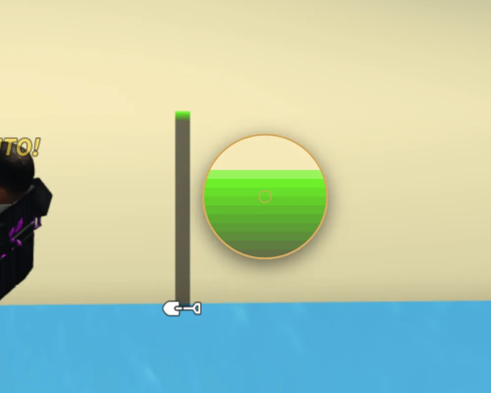
The picker's loupe magnifying the dig bar's green zone.
opt
Money, shards, and finds boxes
Optional
Three drag-a-box regions that feed the earnings statistics and the finds log (see Analytics and HUD). Instead of clicking a point, you drag a box corner to corner around the on-screen element; one drag fills both stored corners, and the tab keeps a small preview thumbnail of what you boxed. The numbers are read with on-device OCR; nothing leaves your machine. The reader uses the macOS Vision framework, so on a machine without Vision the earnings and finds trackers report it in the log and stay off.
Money counter region. Make sure the money total is visible in its usual corner, then drag a box around the number. Leave generous room to the left: the number grows longer as you earn.
Shards counter region. Same for the shards number, next to the crystal icon, again with room to the left.
Find pop-up region. Drag a box over the whole finds area. Finds stack vertically and fade, so make it tall enough for several cards and wide enough for the longest item name. Having a find on screen helps you aim but is not required.
A box must be at least 8 by 6 px; anything smaller is rejected with "That box is too small. Drag a bigger one."
Before trusting the stats, run "Test money/shards read" and "Test find pop-up read" to see what the OCR actually got.
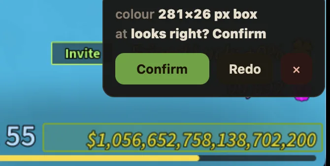
A box around the money number, with the box-confirm card.
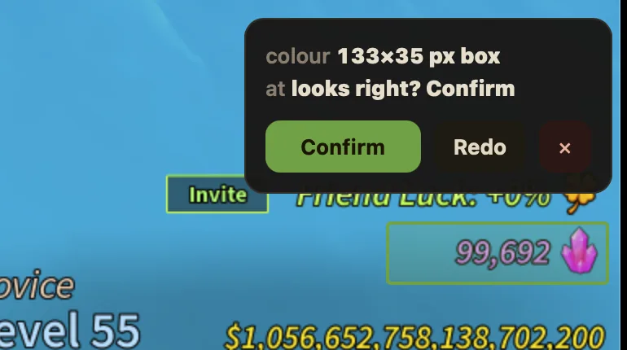
The shards counter boxed the same way.
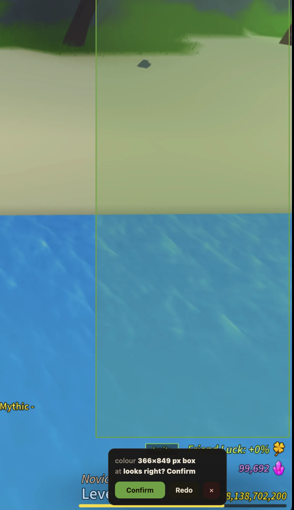
The find pop-up box: tall enough for several stacked cards.
A region only counts as calibrated when both corners exist, so a half-saved box from an old config can never pass as a working one. Skipping the money and shards boxes leaves the earnings stats empty; skipping the find box leaves the finds log empty. Nothing else changes.
opt
Auto Pan button pixel
Optional
Teaches the app to read the game's own Auto Pan toggle, used by Tracker mode and the relic automation to verify the button's state before clicking it. It takes two captures: the button in its ON color, then in its OFF color. You switch the toggle in the game between them, and the flow waits for you each time.
In Roblox, switch Auto Pan ON so the button shows its ON color, come back, and capture the middle of the button.
Switch Auto Pan OFF in the game, come back, and capture the same button again. The second capture saves only the OFF color.
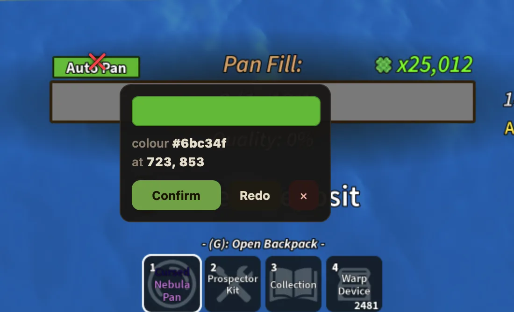
The Auto Pan button in its ON state, with the captured color confirmed.
Fortune River recovery points
One calibration group lives only on the Calibrate tab: the section labeled "Fortune River recovery (optional, advanced)". It is deliberately excluded from the setup wizard and never blocks readiness. You only need it for the Fortune River recovery feature on the Smart tab, which finds its way back to the river through the game's Fast Travel menu. The section's own hint says it plainly: open the Fast Travel menu in-game first, then calibrate each spot. Each row has its own Calibrate button and a status that reads "not set" until captured.
Row
What to do and what it saves
"Fortune River row (pink text)"
Click the pink Fortune River text in the travel list. Saves the scan column and the text color the recovery scans for.
"Starfall River row colour"
Click the Starfall River text. Saves only its color; the scan column and list box are shared with the Fortune River row above.
"Auto Pan button, ON state"
With the game's Auto Pan on (green), click the button. Saves its position and ON color, shared with the Tracker and relic features.
"Auto Pan button, OFF state"
Turn Auto Pan off in-game, then click the button again. Saves its OFF color.
"List - TOP edge"
Click just inside the top of the travel list box. Saves the top boundary of the scan.
"List - BOTTOM edge"
Click just inside the bottom of the list box. Saves the bottom boundary.
"Open Fast Travel (optional)"
A spot to click to open the menu. Leave it unset if 4 + Shift already opens Fast Travel on your setup.
"Screen centre / cursor home"
With shift-lock off, click where the cursor rests (the middle of the screen). All Fortune River mouse moves are measured from this point.
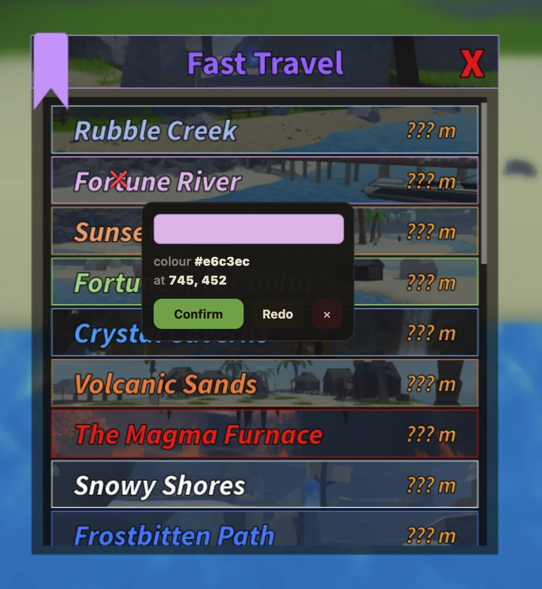
The Fast Travel panel open for calibration, with the picker's confirm card on a captured spot.
Testing your calibration
Calibration is checkable at every level: live sampling, a capacity probe with the runtime math, OCR read tests, and per-item checks on the guided pages. None of these tools writes anything; they read the screen and show you what the engine would see.
Tool
Where
What it shows
"Test detection (live)"
Calibrate tab
Samples the saved spots every 300 ms and lists each with a live color swatch: Capacity ("FULL ✓" or "not full"), the Pan, Shake, and Deposit cues ("visible" when detected), and Dig green. On a fresh install with nothing saved it explains that auto-calibration places the required points at each run start, so an empty list is normal.
"Test capacity calibration"
Calibrate tab, and the capacity step's guided page
In the app's words: "One fresh screenshot read with the exact runtime math: right-tip gold test, fill fraction over the bar band, endpoint-pair validation." Renders a PASS or FAIL card with both tips, how far apart they sit, the stored width, what color the right tip reads, the fill percentage, an annotated preview crop, and on failure a one-click "Recalibrate right end" button.
"Test money/shards read"
Calibrate tab
One OCR pass over the two counter boxes; prints the money and shards values it read so you can compare them against the game before trusting the earnings stats.
"Test find pop-up read"
Calibrate tab
One OCR pass over the find box; prints the raw text lines. An empty result shows "(nothing, widen/aim the region while a find is showing)".
"Test existing calibration"
Each guided step page
Runs the right check for the item. For Advanced Cue Matching it reports per cue either "match (NN% of letter pixels white)" or "no match right now (NN%; needs 85%)", warns when the background reads mostly white, and refuses to place a mask whose window has drifted more than 2 px. For the counter and find boxes it runs the OCR reads; for everything else, live pixel sampling.
A prompt only matches while it is on screen, so test each cue in its real situation: stand in the water to test "Pan", on land at a deposit for "Collect Deposit", and mid-shake for "Shake".
Calibration troubleshooting
The most common calibration problems, with the fastest route to a fix. The app also diagnoses many of these itself: banners on the Run and Calibrate pages, red badges on the sidebar, and the warnings drawer all point at the item that needs attention, and each warning links a matching entry in the searchable local FAQ. For problems beyond calibration, see Troubleshooting and FAQ.
I clicked the wrong pixel
Open the step again and press "Recalibrate" (complete steps stay reopenable through "Review / redo"). Saves validate before they write, and a failed validation keeps your previous values; a bad value is never written silently.
A prompt is on screen but nothing reacts
Run "Test existing calibration" on that cue. It reports the live match percentage (a mask needs 85% of its letter pixels white) and warns if the background itself reads white. A low match means the mask is stale or the capture caught the wrong thing: re-capture it while the prompt is clearly visible, and click the mouse icon out of the selection.
I moved or resized the Roblox window
Calibrations go Stale and a banner explains why. For a pure move, put the window back and health recovers on its own; there is also a setting, "Shift pixels when the Roblox window moves", that shifts calibrated pixels along with a moved window. A resize always needs recalibration, and cue masks are stricter than the rest: they stand down after more than 2 px of size drift and come back when you re-capture the three prompts.
I changed monitor, resolution, or UI scale
Recalibrate; those changes move all the points at once. Guided calibration takes a couple of minutes end to end. Only trust an imported calibration file made at the same window size and resolution.
Capacity readings look wrong
Run "Test capacity calibration" with the bar full; it verifies the live reading without saving anything and names the exact problem. The app also screens stored pairs on its own and flags suspicious ones as Needs review: swapped tips, tips at different heights, or a width under 24 px.
It walks forward and never digs, or hard-stops repeatedly
Both usually point at capacity-bar calibration. Fill the bar, run "Test capacity calibration", and redo the capacity step if it fails. Frequent recoveries during a run point the same way.
It never goes back to the water
Re-capture the "Pan" and "Collect Deposit" spots, and make sure only the prompt the app asks for is visible when you capture. Overlapping prompts during capture are the usual cause.
The picker shows a black screen (macOS)
Screen Recording is not granted, or was granted after this copy of the app started; macOS applies the grant on the next launch. Quit Prospector Lite fully, reopen it, and use the test button on the Trust and permissions step to confirm. The capture buttons check this first and route you to the permission step rather than failing silently.
Can I copy calibration to another PC?
Yes, if the other machine runs at the same resolution and window size. Use "Export…" on the Calibrate tab (default filename prospectors_calibration.json) and "Import…" on the other side. Imports are validated like any other save: a broken file or a bad capacity pair writes nothing and returns the reasons.
I want to start over
Re-run the setup wizard any time from the Trust Center ("Re-run setup wizard"; it deletes nothing), or redo individual items from the Calibrate tab. The red badge on the Calibrate tab tells you when something needs attention, and calibration survives a settings reset unless you explicitly tick the box that clears it.
The warnings drawer names the blocking item and deep-links straight to the fix.